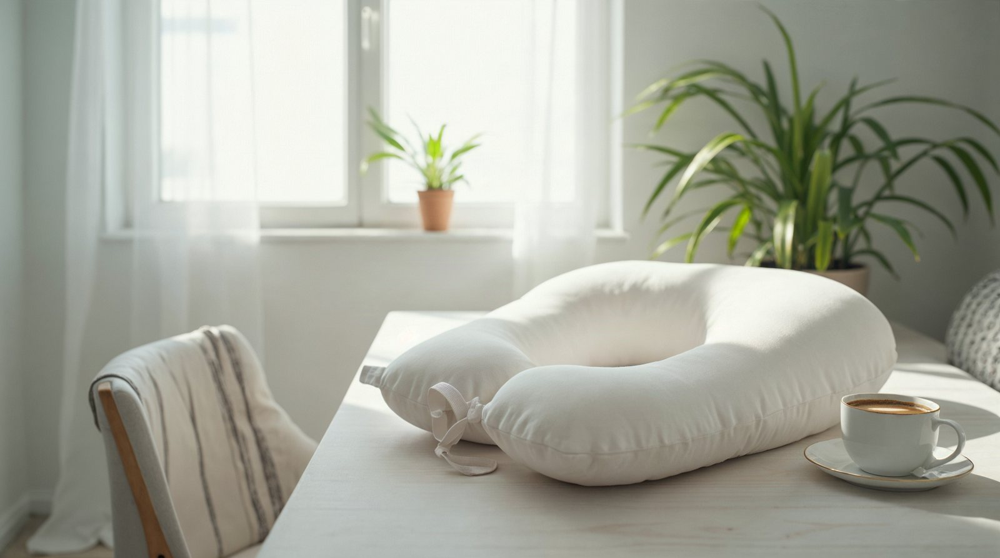
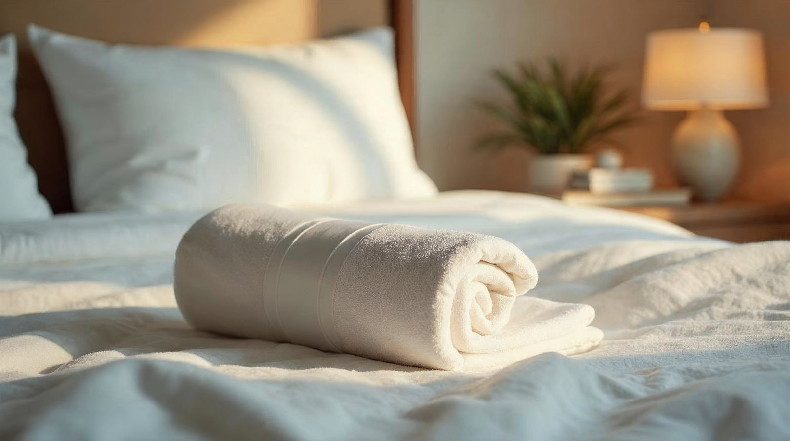
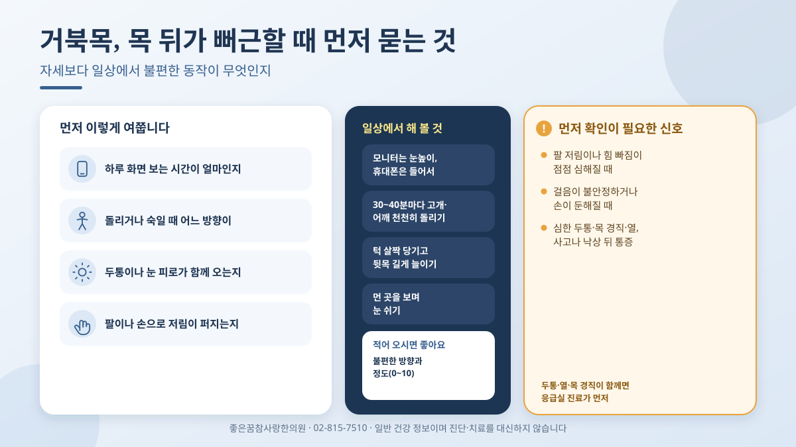

이종호 한의사 감수좋은꿈참사랑한의원 대표원장 (한의사 면허번호 19769)발행 2026-11-26 · 수정 2026-11-26
이 글의 차례
퇴근길 지하철, 손잡이를 잡고 서서 휴대폰을 봅니다. 몇 정거장쯤 지나 내릴 역을 확인하려고 고개를 드는데 목 뒤가 뻣뻣하게 당깁니다. 어깨를 한 번 돌려 봐도 뻐근함은 그대로이고, 집에 가는 내내 뒷머리가 묵직합니다.
거울 앞에서 옆모습을 보다가 고개가 앞으로 쑥 나와 있는 걸 알아챈 날도 있었을 겁니다. 그 뒤로는 의자에 앉을 때마다 신경이 쓰이는데, 정작 일을 시작하면 금세 잊어버리지요.
진료실에서 이런 말씀을 자주 듣습니다. "화면을 안 볼 수가 없는 일이라서요." 맞습니다. 목이 불편하다고 하루 종일 보는 화면을 끌 수는 없습니다. 오후마다 굳어 가는 목을 붙잡고 버텨 오셨을 테니, 얼마나 지치셨을까 싶습니다.
먼저 답부터 드리겠습니다. 거북목과 목 뒤 뻐근함은 목만 따로 보지 않고 어깨와 등, 눈의 피로까지 함께 살핍니다. 처음에는 하루 몇 시간 화면을 보는지, 고개를 어느 방향으로 돌릴 때 불편한지, 두통이나 팔 저림이 함께 있는지를 여쭙습니다.
자세의 모양보다 일상에서 어떤 동작이 불편한지가 다음 순서를 정합니다. 다만 팔로 저림이 내려가거나 힘이 빠진다면, 그때는 먼저 확인할 것이 생깁니다.
왜 고개가 앞으로 나오면 목 뒤가 뻐근할까요
옆에서 보았을 때 귓구멍이 어깨 끝보다 앞에 있다면 머리가 앞으로 나와 있는 자세일 수 있습니다. 머리가 앞으로 나갈수록 그 무게를 뒤에서 붙잡는 목 뒤와 어깨 위 근육은 쉬지 못하고 계속 일을 하게 됩니다.
휴대폰과 모니터를 오래 내려다보면 이런 자세가 몸에 익습니다. 화면이 낮을수록 고개를 숙인 시간이 길어지고, 어깨가 둥글게 앞으로 말리면 목과 등 위쪽 근육까지 함께 긴장합니다.
목 옆으로 길게 내려오는 근육과 어깨 위 근육이 함께 굳어 있으면, 한쪽만 풀어서는 금방 다시 당기는 경우가 많습니다. 아침에 유난히 뻣뻣하다면 베개 높이와 밤사이 자세도 함께 떠올려 봅니다.
- 화면을 내려다보는 시간이 길어진 자세
- 앞으로 말린 어깨와 굳은 등 위쪽
- 맞지 않는 베개와 엎드려 자는 습관

목 뒤만의 문제가 아닌 까닭
머리가 자주 무겁고 조이는 듯하다는 분의 목 뒤와 두피를 눌러 보면 단단하게 굳어 있는 경우가 많습니다. 머리를 감싸는 근육과 목 뒤 근육은 이어져 있어서, 저는 두통이 함께 있을 때 목과 두피를 같이 풀어 주는 쪽을 먼저 생각합니다.
턱도 빼놓을 수 없습니다. 이를 악물거나 턱에 힘을 주는 습관은 관자놀이 쪽 긴장을 부르기도 하고, 턱 주변은 몸 전체의 긴장과 이어져 있습니다. 일에 집중할 때 윗니와 아랫니가 꽉 붙어 있지는 않은지 한번 살펴보세요.
눈의 피로도 목과 어깨의 긴장으로 이어지곤 합니다. 화면을 오래 들여다보며 눈에 힘을 주는 동안 이마와 목 뒤까지 함께 굳기 쉽습니다. 잠이 부족하거나 스트레스가 많은 주에 두피가 당기는 느낌이 늘었다는 분이 많은 것도 같은 이야기입니다.
뒷목이 뻐근하면서 얼굴이 자주 달아오른다는 분께는 집에서 잰 혈압 기록이 있는지도 여쭙고, 맥과 함께 긴장과 잠을 살핍니다. 혈압이 계속 높게 나온다면 내과 확인을 먼저 권해 드립니다.
한의학에서는 목의 긴장을 이렇게도 봅니다
같은 자세로 일해도 유난히 더 굳는 날이 있습니다. 한의학에서는 통증을 기혈의 흐름과 근육·힘줄의 긴장, 몸의 온기와 함께 봅니다. 그래서 따뜻하게 하면 편한지, 피곤하거나 잠이 부족할 때 더 심한지, 날씨에 따라 달라지는지를 여쭙습니다.
목과 어깨가 늘 뭉친 분 가운데에는 소화가 자주 더부룩하거나, 긴장하면 배가 먼저 불편해진다는 분이 적지 않습니다. 필요하다고 판단될 때 배를 눌러 보며 숨을 쉴 때 배가 얼마나 부드럽게 움직이는지도 봅니다. 어깨를 올린 채 얕게 숨 쉬고 계신지 짐작하는 데 참고가 됩니다.
이런 분들을 진료실에서 자주 뵙습니다
특정한 누구의 이야기가 아니라, 목 뒤가 뻐근해 오시는 분들에게서 자주 겹쳐 보이는 모습입니다.
예를 들어 노트북 하나로 하루 종일 일하는 직장인이라면, 화면이 낮아 고개가 계속 아래로 향합니다. 이런 분께는 노트북 받침과 따로 쓰는 키보드로 화면을 눈높이 가까이 올리는 것부터 이야기합니다.
예를 들어 지하철에서 서서 휴대폰을 오래 보는 출퇴근길이라면, 휴대폰을 눈 쪽으로 들어 올려 보는 습관과 내릴 때 어깨를 뒤로 천천히 돌리는 동작을 함께 정합니다. 오가는 시간만 합쳐도 꽤 길기 때문입니다.
예를 들어 밤늦게 침대에 엎드려 휴대폰을 보다 잠드는 학생이라면, 아침 목 뻣뻣함과 두통이 함께 오는지 먼저 확인합니다. 엎드리면 목을 한쪽으로 오래 돌리게 되어, 바로 눕거나 옆으로 눕는 자세를 권합니다.
예를 들어 아이를 안고 지내는 육아 중인 분은 고개를 숙여 아이를 내려다보는 시간이 깁니다. 이런 분께는 팔 앞뒤 근육의 긴장과 함께 하루 중 아이를 안는 시간, 잠을 함께 여쭙습니다.
자고 일어나 목이 돌아가지 않는 날에는
아침에 일어났는데 목이 한쪽으로 돌아가지 않는 날도 있습니다. 이렇게 갑자기 삐끗한 초기에는 근육이 스스로를 보호하려고 굳어 있어서, 하루 사이에도 움직임이 많이 달라질 수 있습니다. 그래서 처음 며칠은 가까운 간격으로 살피다가 불편이 줄면 간격을 넓혀 갑니다.
일어날 때는 고개부터 들지 말고 옆으로 돌아누운 뒤 팔로 밀며 일어나 보세요. 통증이 줄어든 직후보다, 다시 일상 동작을 했을 때 괜찮은지가 더 믿을 만한 기준입니다.
자주 하시는 오해, 조금 풀어 드릴게요
"자세만 바르게 하면 금방 돌아오지 않나요?" 오래된 자세 습관은 몸에 익는 데도 시간이 걸립니다. 화면을 보는 시간과 쉬는 간격을 함께 바꾸지 않으면 예전 자세로 돌아가기 쉬워서, 저는 처음부터 시간이 걸린다는 점을 함께 알고 시작합니다.
"어깨를 힘껏 뒤로 펴고 있으면 되죠?" 힘을 주어 버티면 금방 지칩니다. 그보다 가슴을 펴 주는 동작을 짧게, 자주 반복하는 편이 오래 유지하기 쉽습니다.
목이 뻐근하면 세게 주무르거나 꺾어야 시원하다고 여기시는 분도 많습니다. 강한 자극은 오히려 근육을 더 긴장시킬 수 있습니다. 저는 세게 하기 전에 먼저 묻습니다. 전에 어지러웠던 적이 있는지, 드시는 약은 무엇인지, 오늘 기운은 어떤지입니다.
추나를 받을 때 '뚝' 소리가 나야 한다고 생각하시는 분도 있는데, 소리는 치료의 목표가 아닙니다. 베개도 낮을수록 좋은 것은 아니어서, 목이 꺾이지 않는 높이를 찾아 아침 목 상태를 비교해 보시는 편이 좋습니다. 그리고 베개보다 낮 동안의 자세가 더 큰 몫을 합니다.
먼저 이렇게 여쭙니다
처음 오시면 이런 것부터 하나씩 여쭙습니다.
- 하루에 화면을 보는 시간이 얼마나 되는지
- 고개를 돌리거나 숙일 때 불편한 방향
- 두통이나 눈의 피로가 함께 오는지
- 팔이나 손으로 저림이 내려가는지
- 쓰는 베개와 잠드는 자세
- 하루 중 언제 가장 뻐근한지, 잠과 소화는 어떤지
뻐근한 시간을 여쭙는 데에는 이유가 있습니다. 아침에 가장 뻣뻣하다면 밤사이 자세와 베개를, 오후로 갈수록 심해진다면 낮 동안 화면 앞에서 보낸 시간을 먼저 떠올리게 됩니다. 이 짧은 대답 하나가 어디부터 손볼지를 정해 줍니다.
불편한 방향을 여쭙는 것도 같은 까닭입니다. 동작을 기준으로 이야기하면 관련된 근육과 관절을 좁혀 가기 쉽고, 다음 진료에서 달라진 점도 같은 동작으로 확인할 수 있습니다.
스스로 점검해 보세요
- 하루 화면을 보는 시간이 6시간이 넘는다
- 벽에 등을 대고 서면 뒤통수와 어깨가 함께 닿기 어렵다
- 오후가 되면 목 뒤와 어깨가 뻐근하다
- 뒷머리나 눈 주위가 묵직한 두통이 자주 있다
- 일에 집중하면 이를 악물고 있다
- 아침에 일어날 때 목이 가장 뻣뻣하다
해당하는 것이 많다면 화면 보는 환경과 쉬는 간격부터 살펴보면 좋습니다. 팔이나 손으로 저림이 내려온 적이 있다면 개수와 상관없이 따로 확인이 필요합니다.
일상에서 먼저 해 볼 수 있는 것
- 모니터 위쪽을 눈높이에, 휴대폰은 눈높이로 들어 보기
- 30~50분마다 가슴을 펴고 어깨를 뒤로 천천히 돌리기
- 윗니와 아랫니가 닿아 있으면 살짝 떼기
- 손가락 끝으로 두피를 원을 그리듯 1~2분 문지르기
- 따뜻한 수건으로 목 뒤를 10분 정도 데우기
- 가방은 한쪽 어깨로만 메지 않기
스트레칭은 아프지 않은 범위에서 천천히, 숨을 참지 않고 하는 것이 기본입니다. 턱을 살짝 당기고 뒷목을 길게 늘이는 동작도 '여기서부터 당기네' 싶은 곳에서 멈추세요. 내 힘으로 움직이면 몸이 알아서 아픈 지점 앞에서 멈춥니다.
통증을 참으면서 목을 꺾거나 세게 돌리는 운동은 권하지 않습니다. 긴장될 때는 어깨를 툭 내리고 숨을 천천히 길게 내쉬어 보세요. 틈틈이 먼 곳을 바라보며 눈을 쉬게 하는 것도 목을 쉬게 하는 일입니다.
잠도 목을 쉬게 하는 시간입니다. 잠드는 시각을 일정하게 두고, 잠들기 한 시간 전에는 화면을 줄여 보세요. 침대에 엎드려 휴대폰을 보는 습관은 목에도, 잠에도 부담이 됩니다.
한의원에서 함께 살필 수 있는 경우
- 화면을 오래 보며 목 뒤가 늘 뻐근한 경우
- 목 긴장과 함께 두통이 되풀이되는 경우
- 아침마다 목이 굳어 고개 돌리기가 불편한 경우
- 어깨와 등이 함께 굳어 팔 움직임이 답답한 경우
처음 오시면 불편한 방향과 시간대를 먼저 듣고, 양손을 내어 달라고 말씀드립니다. 저는 처음 오신 모든 분께 맥을 짚으면서 잠은 어떤지, 소화는 편한지, 몸이 차지는 않은지 여쭙습니다. 목 때문에 왔는데 잠은 왜 묻나 싶으시겠지만, 잠을 설친 날 목이 더 굳는다는 분이 많습니다.
그다음 서 있는 옆모습에서 귀와 어깨의 위치를 보고, 자세 사진을 함께 보며 머리와 목, 어깨의 관계를 설명드립니다. 목과 어깨, 등 위쪽을 직접 움직여 보며 누르면 아픈 자리와 근력, 팔 저림 같은 신경 증상을 확인합니다. 필요하다고 판단되면 초음파로 근육과 힘줄 상태도 봅니다.
치료는 상태에 맞춰 침과 약침, 추나 가운데 정합니다. 추나는 머리에서 시작해 목과 등, 골반까지 한 단계씩 이어 갑니다. 강한 자극이 부담스러운 분은 머리와 척추, 천골 주변을 부드러운 손길로 살피는 두개천골추나를 검토하기도 합니다.
한 단계를 마칠 때마다 손으로 버티는 힘과 몸의 좌우 높이를 같은 방법으로 다시 확인합니다. 힘이 한쪽만 약하게 나오는 것은 근육 자체보다 그 근육을 쓰는 자세나 긴장과 관련된 경우가 있어서입니다. 차이를 직접 느껴 보시면 집에서 지킬 자세도 더 잘 기억하십니다.
침이나 약침을 놓는 동안에는 참지 마시고 느낌만 말씀해 달라고 부탁드립니다. 뻐근한지, 찌릿한지, 시원한지 같은 짧은 말이 바늘의 깊이와 방향을 정하는 데 바로 쓰입니다. 무엇이 정상인지 판단하실 필요는 없습니다.
어깨 쪽 힘줄이 오래 불편해 팔을 들 때마다 걸린다면 체외충격파를 함께 검토할 때도 있습니다. 추나요법의 건강보험 적용 여부와 조건은 방문 전 전화(02-815-7510)로 확인해 주세요. 귀가 전에는 화면 높이와 쉬는 간격을 함께 정해 드립니다.
저는 기본적인 치료일수록 의사가 직접 보아야 한다고 생각합니다. 침을 놓으러 가는 그 짧은 시간에도 지난번과 무엇이 달라졌는지를 여쭙고, 담당 원장이 다른 날에도 이전 기록을 보고 이어서 진료합니다.

얼마나 지켜보고, 언제 상담하면 좋을까요
화면 높이와 쉬는 간격을 바꾼 뒤 1~2주는 오후 뻐근함과 아침 목 상태를 적어 비교해 보세요. 바꾼 것이 지금 몸에 맞는지 가늠하는 데 도움이 됩니다.
2~3주가 지나도 뻐근함이 그대로이거나 두통이 잦아진다면 상담을 받아 보시길 권합니다. 두통약을 먹는 날이 늘었다면 그것도 상담하실 때라는 신호입니다.
이렇게 기록해 오시면 상담이 쉬워집니다
- 하루 화면 시간(컴퓨터, 휴대폰)과 쉬는 간격
- 아침 목 상태와 오후 뻐근함을 0~10 점수로
- 두통이 온 날과 시각, 위치, 두통약 먹은 횟수
- 베개를 바꾼 날과 다음 날 아침 목 상태
- 일하는 책상과 의자 사진, 복용 중인 약
두통약을 드시는 분은 그대로 드시면서 먹는 횟수만 적어 오시면 됩니다. 처방받은 약은 처방한 의사와 상의 없이 줄이거나 끊지 않습니다.
이런 증상은 먼저 확인이 필요합니다
- 팔다리에 힘이 빠지거나 저림이 점점 심해지는 경우
- 손 감각이 둔해지거나 단추 채우기가 서툴러진 경우
이런 신호가 있으면 한의원보다 가까운 병원이나 응급실을 먼저 찾으세요.
마치며
거북목이라는 말을 들으면 괜히 내가 뭘 잘못한 것 같은 기분이 드실 수 있습니다. 그런데 그 목은 하루 종일 맡은 일을 해내느라 앞으로 나간 목입니다. 탓하기보다 조금 쉬게 해 주셨으면 합니다.
한 시간에 한 번 고개를 들어 먼 곳을 보는 일, 휴대폰을 눈높이로 들어 올리는 일은 작아 보여도 목이 하루에 지는 무게를 덜어 줍니다. 저는 우리 한의원이 잘 쉬다 가는 곳이었으면 합니다. 오시는 동안만큼은 목도 마음도 조금 내려놓으셨으면 좋겠습니다.
다음에 진료실에서 뵈면, 지난번 불편했던 쪽으로 고개를 한번 돌려 봐 주시라고 부탁드리고, 요즘 화면 앞에서 하루 몇 시간을 보내셨는지부터 여쭙겠습니다.
함께 읽으면 좋은 글
- 거북목과 일자목은 추나로 어떻게 살피나요?
- 목에서 팔로 저림이 내려올 때(목디스크 의심)는 어떤 점을 먼저 확인하나요?
- 스트레스를 받으면 뒷목이 당기고 머리가 아픈 긴장성 두통은 어떻게 살피나요?

여쭙는 것
- 하루에 화면을 보는 시간이 얼마나 되는지
- 고개를 돌리거나 숙일 때 불편한 방향
- 두통이나 눈의 피로가 함께 오는지
생활에서 해 볼 것
- 모니터 위쪽을 눈높이에, 휴대폰은 눈높이로 들어 보기
- 30~50분마다 가슴을 펴고 어깨를 뒤로 천천히 돌리기
- 윗니와 아랫니가 닿아 있으면 살짝 떼기
한의원에서 함께 살필 것
- 화면을 오래 보며 목 뒤가 늘 뻐근한 경우
- 목 긴장과 함께 두통이 되풀이되는 경우
- 아침마다 목이 굳어 고개 돌리기가 불편한 경우
먼저 확인이 필요한 신호
- 팔다리에 힘이 빠지거나 저림이 점점 심해지는 경우
- 손 감각이 둔해지거나 단추 채우기가 서툴러진 경우
한눈에 보는 표
| 구분 | 핵심 |
|---|---|
| 여쭙는 것 | 하루에 화면을 보는 시간이 얼마나 되는지 고개를 돌리거나 숙일 때 불편한 방향 |
| 생활에서 해 볼 것 | 모니터 위쪽을 눈높이에, 휴대폰은 눈높이로 들어 보기 30~50분마다 가슴을 펴고 어깨를 뒤로 천천히 돌리기 |
| 한의원에서 함께 살필 것 | 화면을 오래 보며 목 뒤가 늘 뻐근한 경우 목 긴장과 함께 두통이 되풀이되는 경우 |
| 먼저 확인이 필요한 신호 | 팔다리에 힘이 빠지거나 저림이 점점 심해지는 경우 손 감각이 둔해지거나 단추 채우기가 서툴러진 경우 |
자주 묻는 질문
거북목은 꼭 치료해야 하나요?
자세의 모양보다 불편이 있는지가 먼저입니다. 목 뒤 뻐근함이나 두통처럼 일상에서 불편한 동작이 있다면 그 동작을 기준으로 살피고, 필요하다고 판단될 때 방법을 정합니다.
목이 아프면 두통도 같이 오나요?
목 뒤와 두피, 턱 주변 근육이 함께 굳으면서 머리가 무겁고 조이는 듯한 두통이 오는 분이 있습니다. 다만 갑자기 생긴 아주 심한 두통이나 열과 함께 목이 뻣뻣하다면 가까운 응급실에서 먼저 확인하세요.
추나를 받으면 목이 바로 펴지나요?
변화의 정도와 기간은 사람마다 다릅니다. 자세가 몸에 익기까지 여러 차례가 필요하다는 점을 처음에 말씀드리고, 일상 동작의 변화를 기록하며 조정합니다.
거북목 교정 베개나 보조기를 써도 되나요?
써 보고 아침 목 상태가 편한지가 기준입니다. 불편하거나 저림이 생기면 쓰지 말고 진료 때 함께 살펴보세요.
목이 뻐근할 때 찜질은 따뜻하게 하나요, 차갑게 하나요?
오래 굳은 뻐근함이라면 따뜻한 수건으로 목 뒤를 데워 보시고, 시원하게 풀리면 이어 가셔도 됩니다. 막 삐끗해 열감이 있다면 짧게 차갑게 대는 편이 편할 수 있고, 찜질기를 켠 채 잠들지는 마세요.
좋은꿈참사랑한의원은 재진 때 지난번 이야기부터 이어서 여쭙니다. 진료시간과 예약은 오시는 길에서 확인하세요.
어디서 상담받을 수 있나요?
좋은꿈참사랑한의원은 서울 동작구 만양로2길 2 신성빌딩 3층·5층(서울 동작구 상도동, 7호선 상도역 3번 출구 근처)에 있습니다. 한의사 3명(이종호 대표원장, 조영기 수석진료원장, 정원영 진료원장)이 진료합니다. 진료시간은 평일 09:30~20:00(점심 13:00~14:00), 토·일·공휴일 09:30~15:00이며, 방문 전 전화로 확인을 권합니다. 예약은 네이버 예약, 카카오톡 상담, 전화 02-815-7510로 받습니다.
이 글은 일반적인 건강 정보이며 개인의 진단이나 치료를 대신하지 않습니다. 증상이 있거나 복용 중인 약이 있다면 진료를 통해 확인하세요. 치료 효과는 개인마다 다를 수 있습니다.
작성 기준: 일반적으로 알려져 있는 건강 정보를 참고해 정리했습니다(대표원장 감수). 증상 기록은 1~2주 동안 하루 1회, 비슷한 시간에 적어 오시면 지난 상태와 비교하기 쉽습니다.